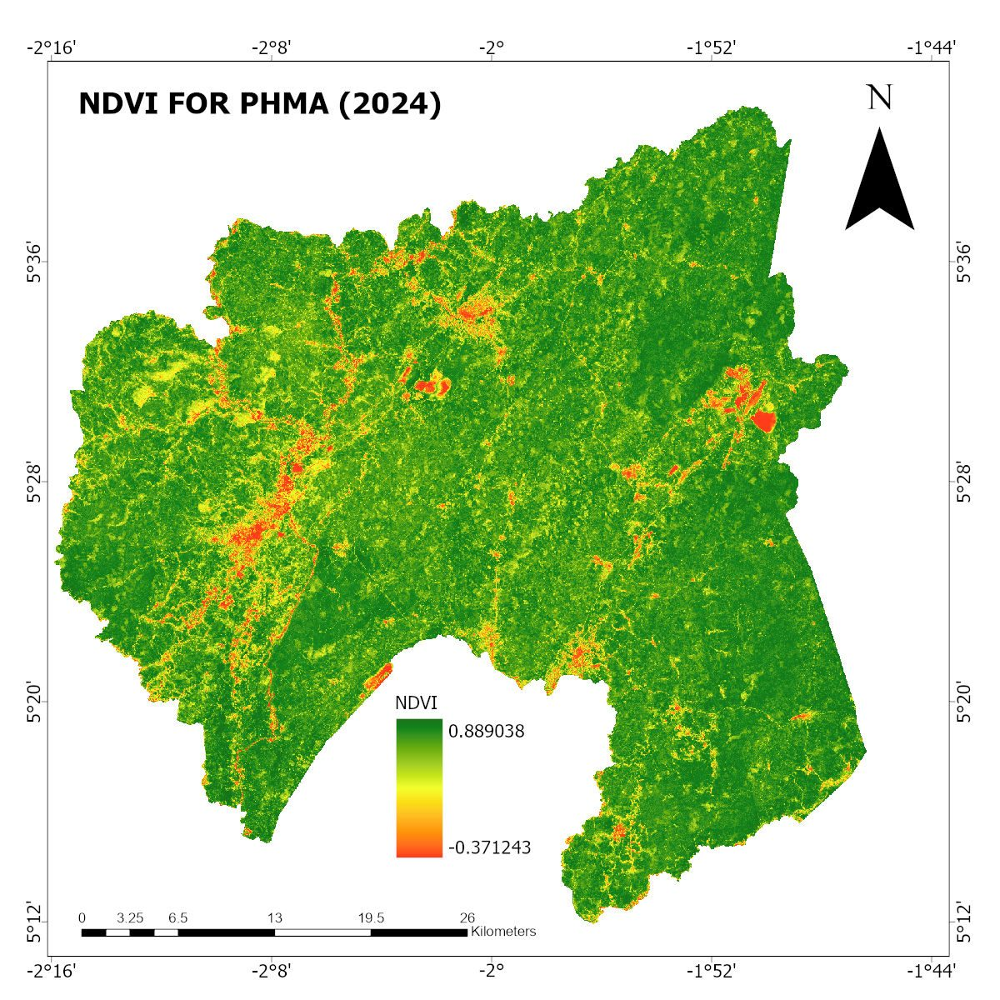

About
A Geospatial Data Scientist, Regional Planner, and Machine Learning Researcher based in Ghana.
- Graduated with First Class Honours (CGPA: 3.82 / 4.00) in BSc Geography and Regional Planning from the University of Cape Coast (UCC), Ghana.
- Three-Time Recipient of the Dean's Award for Academic Excellence (2021, 2022, 2023) in the Faculty of Social Sciences, UCC.
- Served as a departmental Teaching and Research Assistant in GIS and Remote Sensing at UCC, mentoring over 100 undergraduate students.
- Placed Top 5 Globally (16.45 AP) in the 2026 Cyber2A Arctic GeoAI Challenge and 2nd Place in the Esri Map4Impact Hackathon.
- Over 30 professional certifications from ESRI in Spatial Data Science, Climate Action, Cartography, and Spatial Analysis.
- Specialized in PyTorch, GeoPandas, Google Earth Engine, PostGIS, QGIS, ArcGIS Pro, and R Spatial.